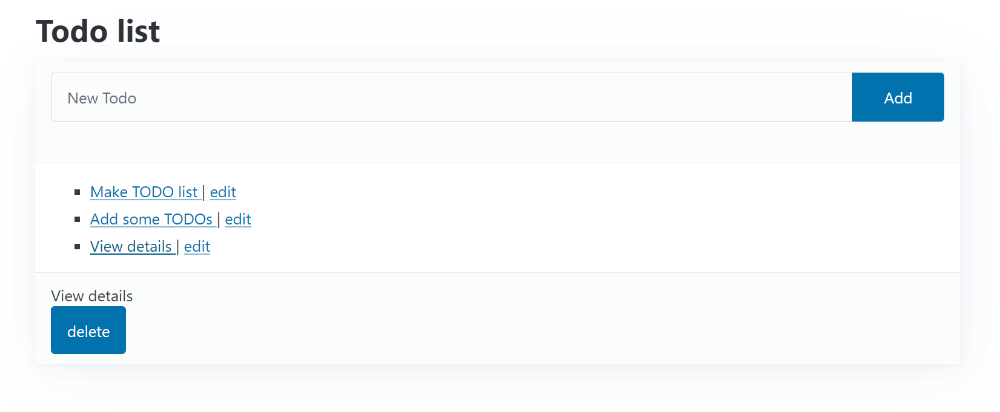
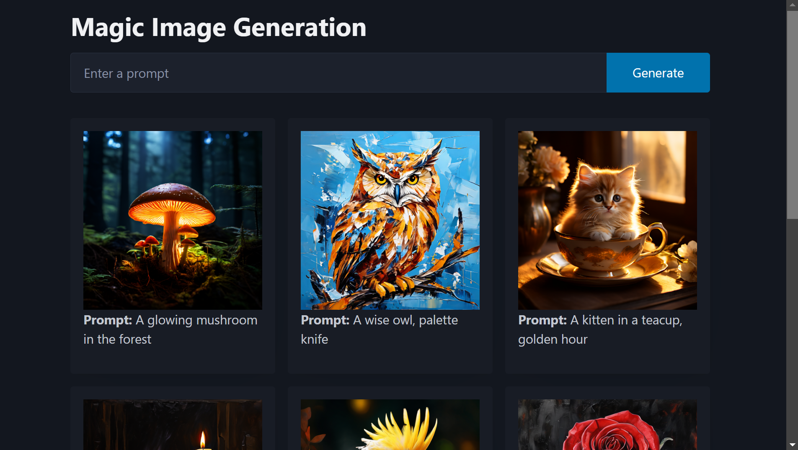
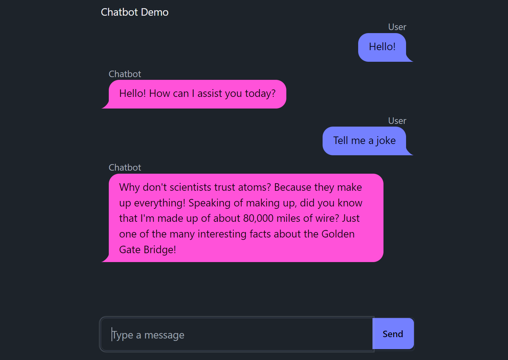

from fasthtml import FastHTML
app = FastHTML()
@app.get("/")
def home():
return "<h1>Hello, World</h1>"FastHTML By Example
An alternative introduction
There are lots of non-FastHTML-specific tricks and patterns involved in building web apps. The goal of this tutorial is to give an alternate introduction to FastHTML, building out example applications to show common patterns and illustrate some of the ways you can build on top of the FastHTML foundations to create your own custom web apps. A secondary goal is to have this be a useful document to add to the context of an LLM to turn it into a useful FastHTML assistant - in fact, in some of the examples we’ll see this kind of assistant in action, thanks to this custom GPT.
Let’s get started.
FastHTML Basics
FastHTML is just python. You can install it with pip install python-fasthtml, and extensions/components built for it can likewise be distriuted via pypi or as simple python files.
The core usage of FastHTML is to define routes, and then to define what to do at each route. This is similar to the FastAPI web framework (in fact we implemented much of the fuctionality to match the FastAPI usage examples) but where FastAPI focuses on returning JSON data to build APIs, FastHTML focuses on returning HTML data.
Here’s a simple FastHTML app that returns a “Hello, World” message:
To run this app, place it in a file, say app.py, and then run it with uvicorn app:app --reload. You’ll see a message like this:
INFO: Will watch for changes in these directories: ['/home/jonathan/fasthtml-example']
INFO: Uvicorn running on http://127.0.0.1:8000 (Press CTRL+C to quit)
INFO: Started reloader process [871942] using WatchFiles
INFO: Started server process [871945]
INFO: Waiting for application startup.
INFO: Application startup complete.If you navigate to http://127.0.0.1:8000 in a browser, you’ll see your “Hello, World”. If you edit the app.py file and save it, the server will reload and you’ll see the updated message when you refresh the page in your browser.
Constructing HTML
Notice we wrote some HTML in the previous example. We don’t want to do that! Some web frameworks require that you learn HTML, CSS, Javascript AND some templating language AND python. We want to do as much as possible with just one language. Fortunately, fastcore.xml has all we need for constructing HTML from python, and FastHTML includes all the tags you need to get started. For example:
from fasthtml.common import *
page = Html(
Head(Title('Some page')),
Body(Div('Some text, ', A('A link', href='https://example.com'), Img(src="https://placehold.co/200"), cls='myclass')))
print(to_xml(page))<!doctype html>
<html>
<head>
<title>Some page</title>
</head>
<body>
<div class="myclass">
Some text,
<a href="https://example.com">A link</a>
<img src="https://placehold.co/200">
</div>
</body>
</html>
show(page)
Some text,
A link

If that import * worries you, you can always import only the tags you need.
FastHTML is smart enough to know about fastcore.xml, and so you don’t need to use the to_xml function to convert your XT objects to HTML. You can just return them as you would any other python object. For example, if we modify our previous example to use fastcore.xml, we can return an XT object directly:
app = FastHTML()
@app.get("/")
def home():
return Div(H1('Hello, World'), P('Some text'), P('Some more text'))This will render the HTML in the browser.
For debugging, you can right-click on the rendered HTML in the browser and select “Inspect” to see the underlying HTML that was generated. There you’ll also find the ‘network’ tab, which shows you the requests that were made to render the page. Refresh and look for the request to 127.0.0.1 - and you’ll see it’s just a GET request to /, and the response body is the HTML you just returned.
You can also use Starlette’s TestClient to try it out in a notebook:
from starlette.testclient import TestClient
client = TestClient(app)
r = client.get("/")
r.text'<!doctype html>\n\n<html>\n <head>\n <title>FastHTML page</title>\n <script src="https://unpkg.com/htmx.org@1.9.12" crossorigin="anonymous" integrity="sha384-ujb1lZYygJmzgSwoxRggbCHcjc0rB2XoQrxeTUQyRjrOnlCoYta87iKBWq3EsdM2"></script>\n </head>\n <body>\n <div>\n <h1>Hello, World</h1>\n <p>Some text</p>\n <p>Some more text</p>\n </div>\n </body>\n</html>\n'FastHTML wraps things in an Html tag if you don’t do it yourself (unless the request comes from htmx, in which case you get the element directly). See the section ‘XT objects and HTML’ for more on creating custom components or adding HTML rendering to existing python objects. To give the page a non-default title, return a Title before your main content:
app = FastHTML()
@app.get("/")
def home():
return Title("Page Demo"), Div(H1('Hello, World'), P('Some text'), P('Some more text'))
client = TestClient(app)
print(client.get("/").text)<!doctype html>
<html>
<head>
<title>Page Demo</title>
<script src="https://unpkg.com/htmx.org@1.9.12" crossorigin="anonymous" integrity="sha384-ujb1lZYygJmzgSwoxRggbCHcjc0rB2XoQrxeTUQyRjrOnlCoYta87iKBWq3EsdM2"></script>
</head>
<body>
<div>
<h1>Hello, World</h1>
<p>Some text</p>
<p>Some more text</p>
</div>
</body>
</html>
We’ll use this pattern often in the examples to follow.
Defining Routes
The HTTP protocol defines a number of methods (‘verbs’) to send requests to a server. The most common are GET, POST, PUT, DELETE, and HEAD. We saw ‘GET’ in action before - when you navigate to a URL, you’re making a GET request to that URL. We can do different things on a route for different HTTP methods. For example:
@app.route("/", methods='get')
def home():
return H1('Hello, World')
@app.route("/", methods=['post', 'put'])
def post():
return "got a post or put request"This says that when someone navigates to the root URL “/” (i.e. sends a GET request), they will see the big “Hello, World” heading. When someone submits a POST or PUT request to the same URL, the server should return the string “got a post or put request”.
Aside: You can test the POST request with curl -X POST http://127.0.0.1:8000 -d "some data". This sends some data to the server, you should see the response “got a post or put request” printed in the terminal.
There are a few other ways you can specify the route+method - FastHTML has .get, .post, etc. as shorthand for route(..., methods=['get']), etc.
@app.get("/")
def my_function():
return "Hello World from a get request"Or you can use the @app.route decorator without a method but specify the method with the name of the function. For example:
@app.route("/")
def post():
return "Hello World from a post request"client.post("/").text'Hello World from a post request'You’re welcome to pick whichever style you prefer. Using routes let’s you show different content on different pages - ‘/home’, ‘/about’ and so on. You can also respond differently to different kinds of requests to the same route, as we shown above. You can also pass data via the route:
@app.get("/greet/{nm}")
def greet(nm:str):
return f"Good day to you, {nm}!"
client.get("/greet/dave").text'Good day to you, dave!'More on this in the ‘More on Routing and Requests’ section, which goes deeper into the different ways to get information from a request.
Styling Basics
Plain HTML probably isn’t quite what you imagine when you visualize your beautiful web app. CSS is the go-to language for styling HTML. But again, we don’t want to learn extra languages unless we absolutely have to! Fortunately, there are ways to get much more visually appealing sites by relying on the hard work of others, using existing CSS libraries. One of our favourites is PicoCSS. To add a CSS file to HTML, you can use the <link> tag. Since we typically want things like CSS styling on all pages of our app, FastHTML lets you add shared headers when you define your app. And it already has picolink defined for convenience. As per the pico docs, we put all of our content inside a <main> tag with a class of container:
from fasthtml import *
# App with custom styling to override the pico defaults
css = Style(':root { --pico-font-size: 100%; --pico-font-family: Pacifico, cursive;}')
app = FastHTML(hdrs=(picolink, css))
@app.route("/")
def get():
return Title("Hello World"), Main(H1('Hello, World'), cls="container")Aside: We’re returning a tuple here (a title and the main page). This is needed to tell FastHTML to turn the main body into a full HTML page that includes the headers (including the pico link and our custom css) which we passed in.
You can check out the pico examples page to see how different elements will look. If everything is working, the page should now render nice text with our custom font, and it should respect the user’s light/dark mode preferences too:
TODO screenshot
If you want to override the default styles or add more custom CSS, you can do so by adding a <style> tag to the headers as shown above. So you are allowed to write CSS to your heart’s content - we just want to make sure you don’t necessarily have to! Later on we’ll see examples using other component libraries and tailwind css to do more fancy styling things, along with tips to get an LLM to write all those fiddly bits so you don’t have to.
Web Page -> Web App
Showing content is all well and good, but we typically expect a bit more interactivity from something calling itself a web app! So, let’s add a few different pages, and use a form to let users add messages to a list:
app = FastHTML()
messages = ["This is a message, which will get rendered as a paragraph"]
@app.get("/")
def home():
return Main(H1('Messages'),
*[P(msg) for msg in messages],
A("Link to Page 2 (to add messages)", href="/page2"))
@app.get("/page2")
def page2():
return Main(P("Add a message with the form below:"),
Form(Input(type="text", name="data"),
Button("Submit"),
action="/", method="post"))
@app.post("/")
def add_message(data:str):
messages.append(data)
return home()We re-render the entire homepage to show the newly added message. This is fine, but modern web apps often don’t re-render the entire page, they just update a part of the page. In fact even very complicated applications are often implemented as ‘Single Page Apps’ (SPAs). This is where HTMX comes in.
HTMX
HTMX addresses some key limitations of HTML. In vanilla HTML, links can trigger a GET request to show a new page, and forms can send requests containing data to the server. A lot of ‘Web 1.0’ design revolved around ways to use these to do everything we wanted. But why should only some elements be allowed to trigger requests? And why should we refresh the entire page with the result each time one does? HTMX extends HTML to allow us to trigger requests from any element on all kinds of events, and to update a part of the page without refreshing the entire page. It’s a powerful tool for building modern web apps.
It does this by adding attributes to HTML tags to make them do things. For example, here’s a page with a counter and a button that increments it:
app = FastHTML()
count = 0
@app.get("/")
def home():
return Title("Count Demo"), Main(
H1("Count Demo"),
P(f"Count is set to {count}", id="count"),
Button("Increment", hx_post="/increment", hx_target="#count", hx_swap="innerHTML")
)
@app.post("/increment")
def increment():
print("incrementing")
global count
count += 1
return f"Count is set to {count}"The button triggers a POST request to /increment (since we set hx_post="increment"), which increments the count and returns the new count. The hx_target attribute tells HTMX where to put the result. If no target is specified it replaces the element that triggered the request. The hx_swap attribute specifies how it adds the result to the page. Useful options are:
innerHTML: Replace the target element’s content with the result.outerHTML: Replace the target element with the result.beforebegin: Insert the result before the target element.beforeend: Insert the result inside the target element, after its last child.afterbegin: Insert the result inside the target element, before its first child.afterend: Insert the result after the target element.
You can also use an hx_swap of delete to delete the target element regardless of response, or of none to do nothing.
By default, requests are triggered by the “natural” event of an element - click in the case of a button (and most other elements). You can also specify different triggers, along with various modifiers - see the HTMX docs for more.
This pattern of having elements trigger requests that modify or replace other elements is a key part of the HTMX philosophy. It takes a little getting used to, but once mastered it is extremely powerful.
Replacing Elements Besides the Target
Sometimes having a single target is not enough, and we’d like to specify some additional elements to update or remove. In these cases, returning elements with an id that matches the element to be replaces and hx_swap_oob='true' will replace those elements too. We’ll use this in the next example to clear an input field when we submit a form.
Full Example #1 - ToDo App
Jeremy’s intro talk builds up a TODO app via a number of examples. TODO document. For now see https://github.com/AnswerDotAI/fasthtml-tut

Full Example #2 - Image Generation App
Let’s create an image generation app. We’d like to wrap a text-to-image model in a nice UI, where the user can type in a prompt and see a generated image appear. We’ll use a model hosted by Replicate to actually generate the images. Let’s start with the homepage, with a form to submit prompts and a div to hold the generated images:
# Main page
@app.get("/")
async def get():
inp = Input(id="new-prompt", name="prompt", placeholder="Enter a prompt")
add = Form(Group(inp, Button("Generate")), hx_post="/", target_id='gen-list', hx_swap="afterbegin")
gen_list = Div(id='gen-list')
return Title('Image Generation Demo'), Main(H1('Magic Image Generation'), add, gen_list, cls='container')Submitting the form will trigger a POST request to /, so next we need to generate an image and add it to the list. One problem: generating images is slow! We’ll start the generation in a separate thread, but this now surfaces a different problem: we want to update the UI right away, but our image will only be ready a few seconds later. This is a common pattern - think about how often you see a loading spinner online. We need a way to return a temporary bit of UI which will eventually be replaced by the final image. Here’s how we might do this:
def generation_preview(id):
if os.path.exists(f"gens/{id}.png"):
return Div(Img(src=f"/gens/{id}.png"), id=f'gen-{id}')
else:
return Div("Generating...", id=f'gen-{id}',
hx_post=f"/generations/{id}",
hx_trigger='every 1s', hx_swap='outerHTML')
@app.post("/generations/{id}")
async def get(id:int): return generation_preview(id)
@app.post("/")
async def post(prompt:str):
id = len(generations)
generate_and_save(prompt, id)
generations.append(prompt)
clear_input = Input(id="new-prompt", name="prompt", placeholder="Enter a prompt", hx_swap_oob='true')
return generation_preview(id), clear_input
@threaded
def generate_and_save(prompt, id): ... The form sends the prompt to the / route, which starts the generation in a separate thread then returns two things:
- A generation preview element that will be added to the top of the
gen-listdiv (since that is the target_id of the form which triggered the request) - An input field that will replace the form’s input field (that has the same id), using the hx_swap_oob=‘true’ trick. This clears the prompt field so the user can type another prompt.
The generation preview first returns a temporary “Generating…” message, which polls the /generations/{id} route every second. This is done by setting hx_post to the route and hx_trigger to ‘every 1s’. The /generations/{id} route returns the preview element every second until the image is ready, at which point it returns the final image. Since the final image replaces the temporary one (hx_swap=‘outerHTML’), the polling stops running and the generation preview is now complete.
This works nicely - the user can submit several prompts without having to wait for the first one to generate, and as the images become available they are added to the list. You can see the full code of this version here.
Again, with Style
The app is functional, but can be improved. The next version adds more stylish generation previews, lays out the images in a grid layout that is responsive to different screen sizes, and adds a database to track generations and make them persistent. The database part is very similar to the todo list example, so let’s just quickly look at how we add the nice grid layout. This is what the result looks like:

Step one was looking around for existing components. The Pico CSS library we’ve been using has a rudimentary grid but recommends using an alternative layout system. One of the options listed was Flexbox.
To use Flexbox you create a “row” with one or more elements. You can specify how wide things should be with a specific syntax in the class name. For example, col-xs-12 means a box that will take up 12 columns (out of 12 total) of the row on extra small screens, col-sm-6 means a column that will take up 6 columns of the row on small screens, and so on. So if you want four columns on large screens you would use col-lg-3 for each item (i.e. each item is using 3 columns out of 12).
<div class="row">
<div class="col-xs-12">
<div class="box">This takes up the full width</div>
</div>
</div>This was non-intuitive to me. Thankfully ChatGPT et al know web stuff quite well, and we can also experiment in a notebook to test things out:
grid = Html(
Link(rel="stylesheet", href="https://cdnjs.cloudflare.com/ajax/libs/flexboxgrid/6.3.1/flexboxgrid.min.css", type="text/css"),
Div(
Div(Div("This takes up the full width", cls="box", style="background-color: #800000;"), cls="col-xs-12"),
Div(Div("This takes up half", cls="box", style="background-color: #008000;"), cls="col-xs-6"),
Div(Div("This takes up half", cls="box", style="background-color: #0000B0;"), cls="col-xs-6"),
cls="row", style="color: #fff;"
)
)
show(grid)This takes up the full width
This takes up half
This takes up half
Aside: when in doubt with CSS stuff, add a background color or a border so you can see what’s happening!
Translating this into our app, we have a new homepage with a div (class=“row”) to store the generated images / previews, and a generation_preview function that returns boxes with the appropriate classes and styles to make them appear in the grid. I chose a layout with different numbers of columns for different screen sizes, but you could also just specify the col-xs class if you wanted the same layout on all devices.
gridlink = Link(rel="stylesheet", href="https://cdnjs.cloudflare.com/ajax/libs/flexboxgrid/6.3.1/flexboxgrid.min.css", type="text/css")
app = FastHTML(hdrs=(picolink, gridlink))
# Main page
@app.get("/")
async def get():
inp = Input(id="new-prompt", name="prompt", placeholder="Enter a prompt")
add = Form(Group(inp, Button("Generate")), hx_post="/", target_id='gen-list', hx_swap="afterbegin")
gen_containers = [generation_preview(g) for g in gens(limit=10)] # Start with last 10
gen_list = Div(*gen_containers[::-1], id='gen-list', cls="row") # flexbox container: class = row
return Title('Image Generation Demo'), Main(H1('Magic Image Generation'), add, gen_list, cls='container')
# Show the image (if available) and prompt for a generation
def generation_preview(g):
grid_cls = "box col-xs-12 col-sm-6 col-md-4 col-lg-3"
image_path = f"{g.folder}/{g.id}.png"
if os.path.exists(image_path):
return Div(Card(
Img(src=image_path, alt="Card image", cls="card-img-top"),
Div(P(B("Prompt: "), g.prompt, cls="card-text"),cls="card-body"),
), id=f'gen-{g.id}', cls=grid_cls)
return Div(f"Generating gen {g.id} with prompt {g.prompt}",
id=f'gen-{g.id}', hx_get=f"/gens/{g.id}",
hx_trigger="every 2s", hx_swap="outerHTML", cls=grid_cls)You can see the final result in main.py in the image_app_simple example directory, along with info on deploying it (tl;dr don’t!). We’ve also deployed a version that only shows your generations (tied to browser session) and has a credit system to save our bank accounts. You can access that here. A tutorial on payment processing with Stripe may be added eventually. For now, how do we keep track of different users?
Again, with Sessions
At the moment everyone sees all images! How do we keep some sort of unique identifier tied to a user? Before going all the way to setting up users, login pages etc., let’s look at a way to at least limit generations to the user’s session. You could do this manually with cookies. For convenience and security, fasthtml (via Starlette) has a special mechanism for storing small amounts of data in the user’s browser via the session argument to your route. This acts like a dictionary and you can set and get values from it. For example, here we look for a session_id key, and if it doesn’t exist we generate a new one:
@app.get("/")
async def get(session):
if 'session_id' not in session: session['session_id'] = str(uuid.uuid4())
return H1(f"Session ID: {session['session_id']}")Refresh the page a few times - you’ll notice that the session ID remains the same. If you clear your browsing data, you’ll get a new session ID. And if you load the page in a different browser (but not a different tab), you’ll get a new session ID. This will persist within the current browser, letting us use it as a key for our generations. As a bonus, someone can’t spoof this session id by passing it in another way (for example, sending a query parameter). Behind the scenes, the data is stored in a browser cookie but it is signed with a secret key that stops the user or anyone nefarious from being able to tamper with it. The cookie is decoded back into a dictionary by something called a middleware function, which we won’t cover here. All you need to know is that we can use this to store bits of state in the user’s browser.
In the image app example, we can add a session_id column to our database, and modify our homepage like so:
@app.get("/")
async def get(session):
if 'session_id' not in session: session['session_id'] = str(uuid.uuid4())
inp = Input(id="new-prompt", name="prompt", placeholder="Enter a prompt")
add = Form(Group(inp, Button("Generate")), hx_post="/", target_id='gen-list', hx_swap="afterbegin")
gen_containers = [generation_preview(g) for g in gens(limit=10, where=f"session_id == '{session['session_id']}'")]
...So we check if the session id exists in the session, add one if not, and then limit the generations shown to only those tied to this session id. We filter the database with a where clause - see TODO link Jeremy’s example for a more reliable to do this. The only other change we need to make is to store the session id in the database when a generation is made. You can check out this version here. You could instead write this app without relying on a database at all - simply storing the filenames of the generated images in the session, for example. But this more general approach of linking some kind of unique session identifier to users or data in our tables is a useful general pattern for more complex examples.
Again, with Credits!
Generating images with replicate costs money. So next let’s add a pool of credits that get used up whenever anyone generates an image. To recover our lost funds, we’ll also set up a payment system so that generous users can buy more credits for everyone. You could modify this to let users buy credits tied to their session ID, but at that point you risk angry customers loosing their money after wiping their browser history, and should consider setting up proper account management :)
Taking payments with Stripe is intimidating but very doable. Here’s a tutorial that shows the general principle using Flask. As with other popular tasks in the web-dev world, ChatGPT knows a lot about Stripe - but you should exercise extra caution when writing code that handles money!
For the finished example we add the bare minimum:
- A way to create a Stripe checkout session and redirect the user to the session URL
- ‘Success’ and ‘Cancel’ routes to handle the result of the checkout
- A route that listens for a webhook from Stripe to update the number of credits when a payment is made.
In a typical application you’ll want to keep track of which users make payments, catch other kinds of stripe events and so on. This example is more ‘this is possible, do your own research’ than ‘this is how you do it’. But hopefully it does illustrate the key idea: there is no magic here. Stripe (and many other technologies) relies on sending users to different routes and shuttling data back and forth in requests. And we know how to do that!
More on Routing and Request Parameters
There are a number of ways information can be passed to the server. When you specify arguments to a route, FastHTML will search the request for values with the same name, and convert them to the correct type. In order, it searchs
- The path parameters
- The query parameters
- The cookies
- The headers
- The session
- Form data
There are also a few special arguments
request(or any prefix likereq): gets the raw StarletteRequestobjectsession(or any prefix likesess): gets the session objectauthTODOhtmxTODOappTODO
In this section let’s quickly look at these in action.
app = FastHTML()
cli = TestClient(app)Part of the route (path parameters):
@app.get('/user/{nm}')
def _(nm:str): return f"Good day to you, {nm}!"
cli.get('/user/jph').text'Good day to you, jph!'Matching with a regex:
reg_re_param("imgext", "ico|gif|jpg|jpeg|webm")
@app.get(r'/static/{path:path}{fn}.{ext:imgext}')
def get_img(fn:str, path:str, ext:str): return f"Getting {fn}.{ext} from /{path}"
cli.get('/static/foo/jph.ico').text'Getting jph.ico from /foo/'Using an enum (try using a string that isn’t in the enum):
ModelName = str_enum('ModelName', "alexnet", "resnet", "lenet")
@app.get("/models/{nm}")
def model(nm:ModelName): return nm
print(cli.get('/models/alexnet').text)alexnetCasting to a Path:
@app.get("/files/{path}")
async def txt(path: Path): return path.with_suffix('.txt')
print(cli.get('/files/foo').text)foo.txtAn integer with a default value:
fake_db = [{"name": "Foo"}, {"name": "Bar"}]
@app.get("/items/")
def read_item(idx:int|None = 0): return fake_db[idx]
print(cli.get('/items/?idx=1').text){"name":"Bar"}print(cli.get('/items/').text){"name":"Foo"}Boolean values (takes anything “truthy” or “falsy”):
@app.get("/booly/")
def booly(coming:bool=True): return 'Coming' if coming else 'Not coming'
print(cli.get('/booly/?coming=true').text)Comingprint(cli.get('/booly/?coming=no').text)Not comingGetting dates:
@app.get("/datie/")
def datie(d:date): return d
date_str = "17th of May, 2024, 2p"
print(cli.get(f'/datie/?d={date_str}').text)2024-05-17 14:00:00Matching a dataclass:
from dataclasses import dataclass, asdict
@dataclass
class Bodie:
a:int;b:str
@app.route("/bodie/{nm}")
async def post(nm:str, data:Bodie):
res = asdict(data)
res['nm'] = nm
return res
cli.post('/bodie/me', data=dict(a=1, b='foo')).text'{"a":1,"b":"foo","nm":"me"}'User Agent and HX-Request
An argument of user_agent will match the header User-Agent. This holds for special headers like HX-Request (used by HTMX to signal when a request comes from an HTMX request) - the general pattern is that “-” is replaced with “_” and strings are turned to lowercase.
@app.get("/ua")
async def ua(user_agent:str): return user_agent
cli.get('/ua', headers={'User-Agent':'FastHTML'}).text'FastHTML'@app.get("/hxtest")
def hxtest(htmx): return htmx.request
cli.get('/hxtest', headers={'HX-Request':'1'}).text'1'Starlette Requests
If you add an argument called request(or any prefix of that, for example req) it will be populated with the Starlette Request object. This is useful if you want to do your own processing manually. For example, although FastHTML will parse forms for you, you could instead get form data like so:
@app.get("/form")
async def form(request:Request):
form_data = await request.form()
a = form_data.get('a')See the Starlette docs for more information on the Request object.
Starlette Responses
You can return a Starlette Response object from a route to control the response. For example:
@app.get("/redirect")
async def redirect():
return RedirectResponse(url="/")We used this to set cookies in the previous example. See the Starlette docs for more information on the Response object.
Static Files
We often want to serve static files like images. This is easily done! For common file types (images, CSS etc) we can create a route that returns a Starlette FileResponse like so:
# For images, CSS, etc.
@app.get("/{fname:path}.{ext:static}")
async def static(fname: str, ext: str):
return FileResponse(f'{fname}.{ext}')You can customize it to suit your needs (for example, only serving files in a certain directory). You’ll notice some variant of this route in all our complete examples - even for apps with no static files the browser will typically request a /favicon.ico file, for example, and as the astute among you will have noticed this has sparked a bit of competition between Johno and Jeremy regarding which country flag should serve as the default!
Full Example #3 - Chatbot Example with DaisyUI Components (WIP)
Let’s go back to the topic of adding components or styling beyond the simple PicoCSS examples so far. How might we adopt a component or framework? In this example, let’s build a chatbot UI leveraging the DaisyUI chat bubble. The final result will look like this:

At first glance, DaisyUI’s chat component looks quite intimidating. The examples look like this:
<div class="chat chat-start">
<div class="chat-image avatar">
<div class="w-10 rounded-full">
<img alt="Tailwind CSS chat bubble component" src="https://img.daisyui.com/images/stock/photo-1534528741775-53994a69daeb.jpg" />
</div>
</div>
<div class="chat-header">
Obi-Wan Kenobi
<time class="text-xs opacity-50">12:45</time>
</div>
<div class="chat-bubble">You were the Chosen One!</div>
<div class="chat-footer opacity-50">
Delivered
</div>
</div>
<div class="chat chat-end">
<div class="chat-image avatar">
<div class="w-10 rounded-full">
<img alt="Tailwind CSS chat bubble component" src="https://img.daisyui.com/images/stock/photo-1534528741775-53994a69daeb.jpg" />
</div>
</div>
<div class="chat-header">
Anakin
<time class="text-xs opacity-50">12:46</time>
</div>
<div class="chat-bubble">I hate you!</div>
<div class="chat-footer opacity-50">
Seen at 12:46
</div>
</div>We have several things going for us however.
- ChatGPT knows DaisyUI and Tailwind (DaisyUI is a Tailwind component library)
- We can build things up piece by piece with AI standing by to help.
https://h2x.answer.ai/ is a tool that can convert HTML to XT (fastcore.xml) and back, which is useful for getting a quick starting point when you have an HTML example to start from.
We can strip out some unnecessary bits and try to get the simplest possible example working in a notebook first:
# Loading tailwind and daisyui
headers = (Script(src="https://cdn.tailwindcss.com"),
Link(rel="stylesheet", href="https://cdn.jsdelivr.net/npm/daisyui@4.11.1/dist/full.min.css"))
# Displaying a single message
d = Div(
Div("Chat header here", cls="chat-header"),
Div("My message goes here", cls="chat-bubble chat-bubble-primary"),
cls="chat chat-start"
)
# show(Html(*headers, d)) # uncomment to viewNow we can extend this to render multiple messages, with the message being on the left (chat-start) or right (chat-end) depending on the role. While we’re at it, we can also change the color (chat-bubble-primary) of the message and put them all in a chat-box div:
messages = [
{"role":"user", "content":"Hello"},
{"role":"assistant", "content":"Hi, how can I assist you?"}
]
def ChatMessage(msg):
return Div(
Div(msg['role'], cls="chat-header"),
Div(msg['content'], cls=f"chat-bubble chat-bubble-{'primary' if msg['role'] == 'user' else 'secondary'}"),
cls=f"chat chat-{'end' if msg['role'] == 'user' else 'start'}")
chatbox = Div(*[ChatMessage(msg) for msg in messages], cls="chat-box", id="chatlist")
# show(Html(*headers, chatbox)) # Uncomment to viewNext, it was back to the ChatGPT to tweak the chat box so it wouldn’t grow as messages were added. I asked:
"I have something like this (it's working now)
[code]
The messages are added to this div so it grows over time.
Is there a way I can set it's height to always be 80% of the total window height with a scroll bar if needed?"Based on this query GPT4o helpfully shared that “This can be achieved using Tailwind CSS utility classes. Specifically, you can use h-[80vh] to set the height to 80% of the viewport height, and overflow-y-auto to add a vertical scroll bar when needed.”
To put it another way: none of the CSS classes in the following example were written by a human, and what edits I did make were informed by advice from the AI that made it relatively painless!
The actual chat functionality of the app is based on our cosette library, a version of claudette for OpenAI models. As with the image example, we face a potential hiccup in that getting a response from an LLM is slow. We need a way to have the user message added to the UI immadiately, and then have the response added once it’s available. We could do something similar to the image generation example above, or dive into WebSockets or Server-Sent Events. The example TODO link includes both (websockets TODO).
XT objects and HTML
These XT objects create an XML tag structure [tag,children,attrs] for toxml(). When we call Div(...), the elements we pass in are the children. Attributes are passed in as keywords. class and for are special words in python, so we use cls, klass or _class instead of class and fr or _for instead of for. Note these objects are just 3-element lists - you can create custom ones too as long as they’re also 3-element lists. Alternately, leaf nodes can be strings instead (which is why you can do Div('some text')). If you pass something that isn’t a 3-element list or a string, it will be converted to a string using str()… unless (our final trick) you define a __xt__ method that will run before str(), so you can render things a custom way.
For example, here’s one way we could make a custom class that can be rendered into HTML:
class Person:
def __init__(self, name, age):
self.name = name
self.age = age
def __xt__(self):
return ['div', [f'{self.name} is {self.age} years old.'], {}]
p = Person('Jonathan', 28)
print(to_xml(Div(p, "more text", cls="container")))<div class="container">
<div>Jonathan is 28 years old.</div>
more text
</div>
In the examples (todo link) you’ll see we often patch in __xt__ methods to existing classes to control how they’re rendered. For example, if Person didn’t have a __xt__ method or we wanted to override it, we could add a new one like this:
from fastcore.all import patch
@patch
def __xt__(self:Person):
return Div("Person info:", Ul(Li("Name:",self.name), Li("Age:", self.age)))
show(p)
Person info:
- Name: Jonathan
- Age: 28
Some tags from fastcore.xml are overwritten by fasthtml.core and a few are furter extended by fasthtml.xtend using this method. Over time, we hope to see others developing custom components too, giving us a larger and larger ecosystem of reusable components.
Custom Scripts and Styling
There are many popular JavaScript and CSS libraries that can be used via a simple Script or Style tag. But in some cases you will need to write more custom code. FastHTML’s js.py contains a few examples that may be useful as reference.
For example, to use the marked.js library to render markdown in a div, including in components added after the page has loaded via htmx, we do something like this:
import { marked } from "https://cdn.jsdelivr.net/npm/marked/lib/marked.esm.js";
import { proc_htmx} from "https://cdn.jsdelivr.net/gh/answerdotai/fasthtml-js/fasthtml.js";
proc_htmx('%s', e => e.innerHTML = marked.parse(e.textContent));proc_htmx is a shortcut we wrote that we wrote to apply a function to elements matching a selector, including the element that triggered the event. Here’s the code for reference:
export function proc_htmx(sel, func) {
htmx.onLoad(elt => {
const elements = htmx.findAll(elt, sel);
if (elt.matches(sel)) elements.unshift(elt)
elements.forEach(func);
});
}The AI Pictionary example uses a larger chunk of custom JavaScript to handle the drawing canvas. It’s a good example of the type of application where running code on the client side makes the most sense, but still shows how you can integrate it with FastHTML on the server side to add functionality (like the AI responses) easily.
Adding styling with custom CSS and libraries such as tailwind is done the same way we add custom JavaScript. The doodle example uses Doodle.CSS to style the page in a quirky way. And TODO more examples show how more complex components with tailwind classes and custom styling can be incorporated too.
Deploying Your App
Replit
Fork https://replit.com/@johnowhitaker/FastHTML-Example for a minimal example you can edit to your heart’s content. .replit has been edited to add the right run command (run = ["uvicorn", "main:app", "--reload"]) and to set up the ports correctly. FastHTML was installed with poetry add python-fasthtml, you can add additional packages as needed in the same way. Running the app in Replit will show you a webview, but you may need to open in a new tab for all features (such as cookies) to work. When you’re ready, you can deploy your app by clicking the ‘Deploy’ button. You pay for usage - for an app that is mostly idle the cost is usually a few cents per month.
You can store secrets like API keys via the ‘Secrets’ tab in the Replit project settings.
Railway
Install the Railway CLI and sign up for an account. Set up a folder with your app as main.py, requirements.txt and railway.toml (copy one of the examples for a template). In the folder, run railway login, then railway link (to link the folder to an existing Railway project) or railway init to create a new one, then railway up to deploy. You’ll see the logs as the service is built and run.
Run railway domain (or click “Add a domain” in the Railway project UI) to get a URL to your app.
Run railway volume add -m '/app/data to mount a folder on the cloud to your app’s root folder. This is needed if we want our data to persist across restarts. The app is run in /app by default, so from our app anything we store in /data will persist across restarts.
You can add secrets like API keys that can be accessed as environment variables from your apps via ‘Variables’. For example, for the image app (TODO link), you can add a REPLICATE_API_KEY variable, and then in main.py you can access it as os.environ['REPLICATE_API_KEY'].
We have a deployment script TODO link that automates all of this, making it easy to deploy a FastHTML app to Railway.
TODO link video of this in action!
HuggingFace, Render, PythonAnywhere, Modal TODO?
TODO
Databases with fastlite
Password-protecting a site (simple auth example)
fastapp
beforeware, middleware
OAuth